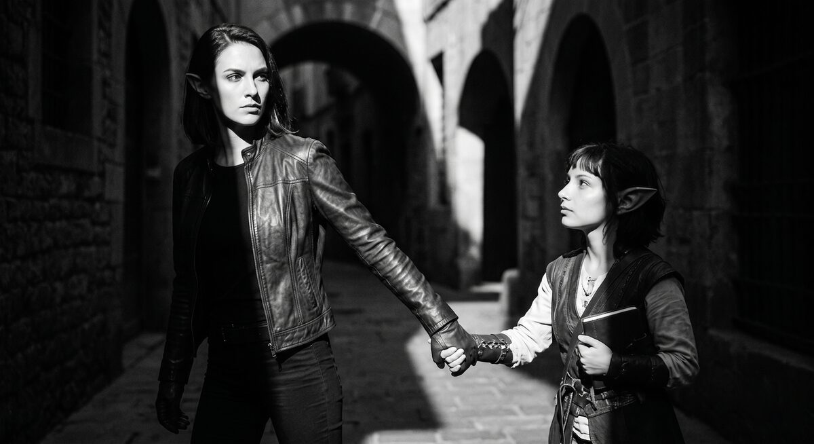

Mechanics
Companions: those who walk beside you
A companion is a character who has joined the hero and walks with them through the world. They have their own conditions: they will not go with just anyone, they can leave, and they can betray. This chapter is about how to describe such a character.
The cardinal rule: a companion is not a party slot. They are a person making choices — every time. That is what makes them alive.

Where it is written
All companion rules live in a single section inside the character's
file: ## Companion Rules. That means a companion is, by default, a
regular NPC who simply has an additional "contract" about how to
become or stop being a companion.
Section structure
## Companion Rules
- Join condition: conditions under which I join.
- Refusal condition: conditions under which I refuse permanently.
- Loyalty pressure: limits while I am with the hero.
- Depart condition: conditions under which I leave.
- How I follow: how I move and fight when with the hero.
- Inventory baseline: what I carry.
- New-world reaction: reaction to traveling into another cartridge.
Let's walk through each field.
Join Condition — how to recruit them
The conditions under which the character becomes a companion. They must be specific actions, not vague "the hero behaves well." The more precise, the more interesting.
- Join condition: the hero must (a) refuse the fixer's offer
publicly, (b) bring me at least one matching wax pattern, and
(c) ask about Joran by name.
Notice: three conditions, and all together. That means Tessa will not join just because the player picked a flattering line. She has to be earned with deeds — a refusal of easy profit, a discovered clue, demonstrated interest in her wound. That is what makes companionship an event, not a reward for a clever dialogue pick.
Refusal Condition — refusal forever
What the player can do that closes off the possibility of companionship for the rest of the run:
- Refusal condition: if the hero takes the fixer's offer in my
presence, I will pretend to think about it and vanish by morning.
Not "I'll refuse right now," but "vanish by morning." That is character. Tessa does not make a scene — she simply disappears.
Loyalty Pressure — pressure of loyalty
Sometimes a companion walks with the hero but with conditions. There are places they will not go. There are people they will not stand beside. Those limits go here:
- Loyalty pressure: I will not enter `@Greenhaven Adventurers' Guild`
with the hero if `@Cassian Flintbanner` is still not publicly
exposed.
This is not a "companion weakness." It is a boundary of character. And it is exactly out of boundaries like this that respect for a character grows.
Depart Condition — when they leave
Actions by the player after which the companion leaves the party permanently:
- Depart condition: if the hero abandons two civilians in a row or
sells a witness to the fixer, I leave at the next dawn.
A good departure condition is not one rash act, but an accumulated pattern of behavior. "Two in a row" is already a pattern. Tessa does not leave over one mistake, but she does not pardon repeatedly either.
How I Follow — the style of following
How the companion behaves on the road and in a fight:
- How I follow: I take the high ground, scout exits, chalk-mark
routes. I do not stand between the hero and a rat. I fight with
needles first, blade second, lockpicks always.
This is the narrator's instruction for how to describe the companion's actions. Tessa does not walk shoulder-to-shoulder — she climbs to the warehouse roof. That is her character in motion.
Inventory Baseline — what they carry
The baseline set of items the companion always has:
- Inventory baseline: a short curved blade, three throwing needles,
a set of lockpicks, the brass compass, a folded copy of her ledger,
2 silver, 11 copper, a hand mirror.
New-World Reaction — travel between worlds
If the player carries the companion across cartridges (a new world warming up, a new big chapter, another project):
- New-world reaction (cartridge travel): I will follow the hero into
one cartridge after Greenhaven if and only if I have already named
the fixer to the registrar publicly.
This field matters for long campaigns where you want a companion to earn the right to travel between worlds.
How it works at runtime
To make off-stage clear, when the companion conditions resolve:
- When all
Join conditionitems are satisfied, the engine adds the character to the hero's companion list. - From that point, when the hero moves between locations, the companion travels with them automatically.
- The interface gets a notification and shows the character as present.
- When the hero converses in a location, the companion may be among the participants.
- If
Depart conditionis met, the engine removes the character from the list and the interface shows the departure.
You do not write any code for this. You write rules in plain words, and the engine handles the rest.